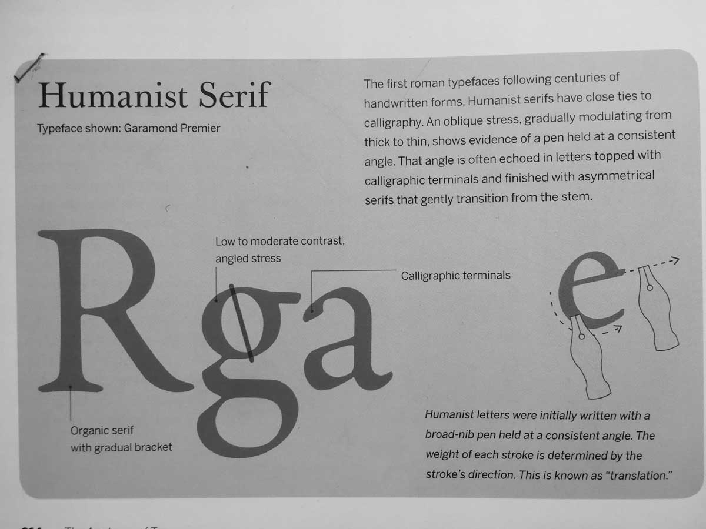
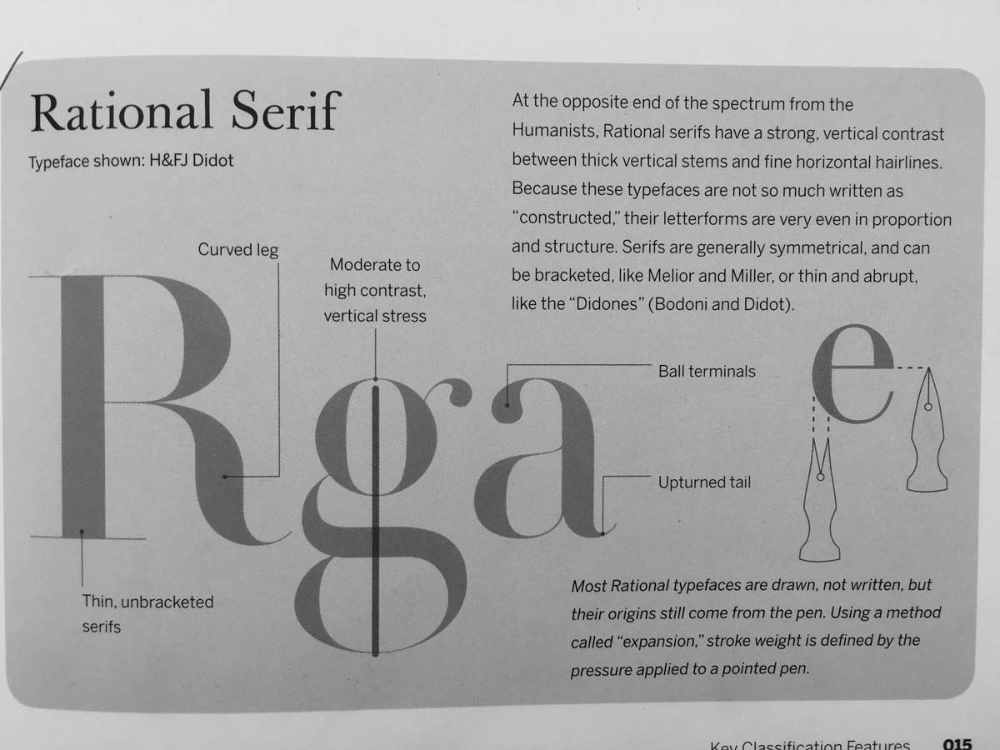
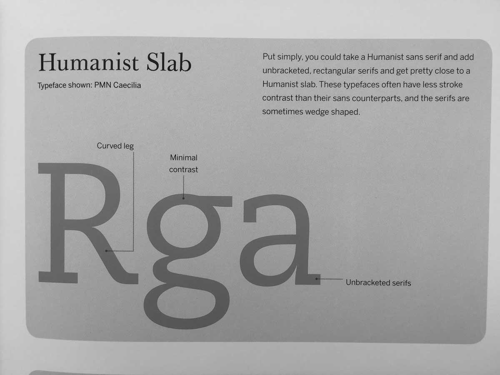
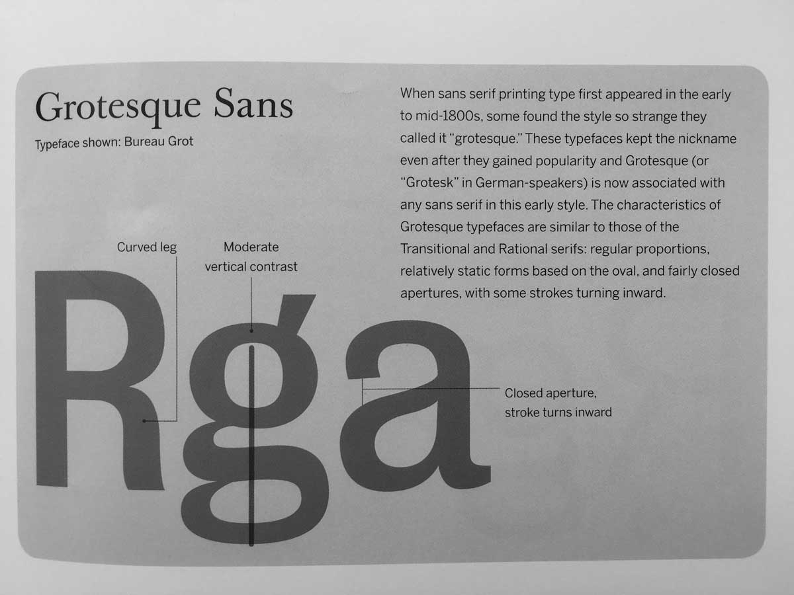
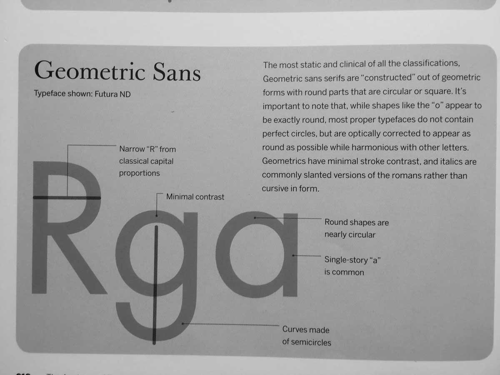
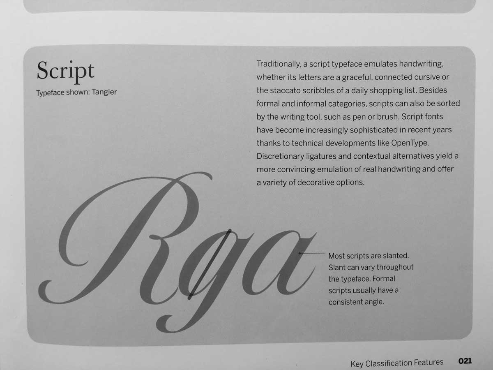

09-01 Assignment
Hunt for Type
Go outside, armed with a camera.
Look for examples of 6 different type classifications: humanist serif, rational serif, slab serif, grotesque sans serif, geometric sans serif, script.
Type classification descriptions from The Anatomy of Type by Stephen Coles.
     For each, snap a picture of one letter that exemplifies the category well.
Download and open the mobile app Layout by Instagram. Use this app to arrange your 6 selected pictures on a 3x3 grid. (That means there are 9 squares, so you can use some pictures multiple times, or you can select 9 pictures from the outset.) Have fun with it. Crop and scale the letters however you like. The entire letter does not have to show in its square, but enough of it should show so that one can identify the type classification.
Submit: Send your grid composition in a direct message via Instagram to the @designforjournalists handle by 10am next Thursday.
Submit: Turn your grid composition into a quiz sheet that you will share with the class. The quiz sheet should feature the grid composition, and ask quiz takers to identify the type classification for each square. The quiz sheet should be made on a letter-size paper. It's up to you to decide the copy the quiz sheet needs and how best to design it as a good, quiz-taking user experience. Print out 20 copies and bring it to class.
Download & Install
InDesign, Illustrator, Photoshop, Brackets
This Week's Instagram Story
5 Ways to Compose a Paragraph – by Jorge
Frank Ocean's Magazine – by Luna